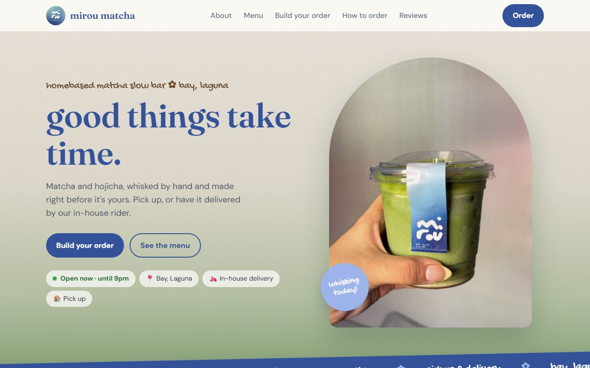
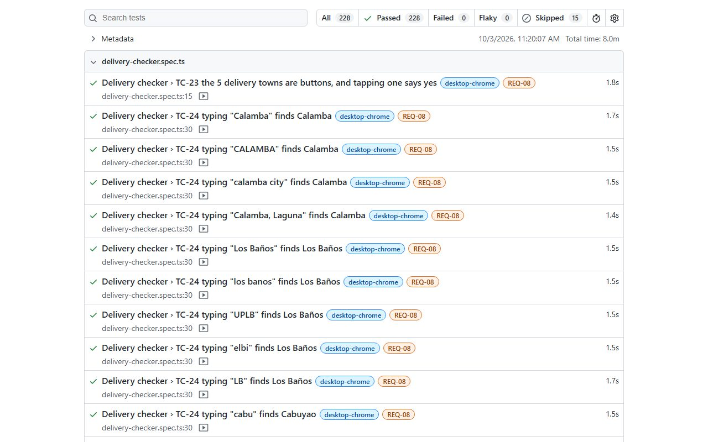

Test plan · test cases · automation · defect log
- A test plan with scope, risks, entry and exit criteria, and severity definitions.
- 54 test cases traced to 16 requirements, plus 8 manual checks for real phones.
- Every test runs on desktop Chrome, an Android phone and an iPhone, including a fake clock for the opening hours.
- A quality gate: tests run on every update, and the site only goes live if all of them pass.
- Regression tests for the bugs were proven to fail on the old, buggy code.
- A change request handled end to end: I questioned an order limit with the owner, then updated the code, tests and docs.
Bugs I found and got fixed
- BUG-002MajorThe same drink could go past the 20-cup limit, then silently drop after a reload (₱6,400 became ₱3,200).
- BUG-003MinorOn phones, the "Reviews" menu link landed 437px short because a photo loaded late.
- BUG-006MinorFound by hand on a Galaxy S24 Ultra: the phone menu couldn't scroll on shorter screens, so the Email contact was cut off.